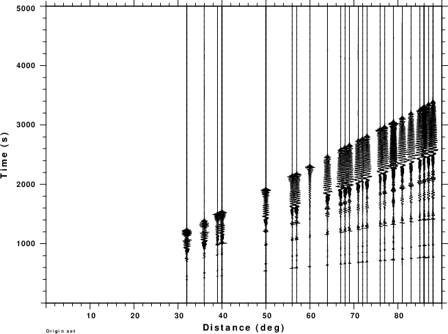

Unpack the section_03.tgz with the command
gunzip -c section_03.tgz | tar xvf -
This will create the directory Section_03 with subdirectories Section_03/Forward and Section_03/Processing.
Rather that viewing the data set in term of what is seen in real time, consider it as for all time, or essentially, previous acquired history that must be processed. A segment of that data stream is show in the next figure. For simplicity, it is assumed that the trial epicenter is the true epicenter.

It is obvious that if the window diverges significantly from the range of the actualy data, then the signal compression and stacking will not yield significant values. The next figure illustrates this for offsets of -10, -5, 0, 5 and 10 minutes about the true origin time. The figures are annotated with the assumed origin time and the maximum amplitude of the envelope. The assumed origin time is indicated by the red vertical bar on each plot.
The first thing to notice that one almost always sees a peak at the assumed origin time. this is because other windows have signal that is compressed, although not perfectly. 4. Processing time windows without a group velocity windowHere we do nto apply a group velocity window to the traces. Instead a moving window is slected, and the inverse dispersion oeprator is applied to the entire window. The windows for -1, 0 and +10 minutes about the true origin time are displayed in the next figure.
Note that these plots start at 00:51:59.566, 01:01:59.566 and 01:11:59.566, respectively. This is illustrated in the next figure which show the synthetics trace for IUANTO plotted in real time for different start times of the cut window, as indicated.
The result of the compression at -10, -5, 0, +5 and +10 minute offsets are shown in the next figure.
For the windows considered, the compression and stacking results are virtually the same. There is some soouce of signal at roughly 01:02. The compression projects gthe observed signal back in absolute time, and since the cut signals ahd the same information, we are not surprised with this plot. Signals commensurate with the assumed dispersion are mapped back to the origin time. Other signals are spread out and offset. In this figure the initial wavefield, think P waves, propagate faster than the assumed phase velocities. thus they are mapped and spread out later in time. Final plot compares the two stacks. the red trace is the result of applying the group velocity window, which the blue trace uses the entire trace. Near the true origin time, the stack amplitudes are about the same. The group velocity windowed processing does not yield as sharp a pulse. The use of a wider window and a different taper will be investigaated.
|